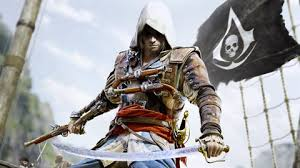
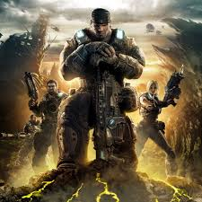
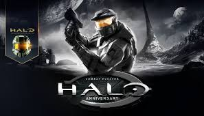

Practica 2
Omar
Instagram: omarl_r_
Mi nombre es Omar. Nací el 1 de marzo de 2007 en el Estado de México. Me gusta mucho la historia, en particular la de México. Disfruto mucho las clases de historia y debatir sobre personajes históricos, aunque no me considero un experto en esto. Sé cómo se llevaron a cabo estos procesos. También me interesa aprender sobre el universo: cómo se creó y cómo llegamos a vivir en un planeta con vida. Otra cosa que disfruto es pasar tiempo con mi familia, especialmente con mi mamá. En mi tiempo libre, me gusta ver videos y escuchar música mexicana, como José José o Luis Miguel. Aunque también disfruto otros géneros musicales.


Juegos favoritos
De mis juegos favoritos que me gustan y hace tiempo que no he podido jugar son "Gears of War
" "Halo" "Assassin's Creed IV" y "Wild Rift": Black Flag"

Assassin’s Creed IV: Black Flag es un juego de piratas con una historia detras del personaje Edward Kenway que es un pirata en el Caribe en el año 1715. pero nosotros estamos en la actualidad y somos trabajadores de una empresa de video juegos.
Las cosas que mas me gustan de este video juego son:
Exploración: Puedes navegar por el mar abierto en tu propio barco pirata. Con el cual se puedes disparar cañones y entrar en batallas en el mar con otros barcos como tambien puedes abordar el barco y matar al capitan.
Islas hermosas: Hay islas por todas partes. Algunas son pequeñas y tranquilas, otras están llenas de tesoros y enemigos. Puedes explorarlas, buscar cofres escondidos y saltar desde acantilados.
Combate naval: Peleas épicas en alta mar. Tienes que disparar cañones, abordar otros barcos y luchar como un auténtico pirata.
En resumen Assassin’s Creed IV: Black Flag es como mezclar piratas, historia y aventura en un solo juego.

Gears of War es un videojuego de disparos en tercera persona que nos sumerge en un mundo futurista devastado por la guerra entre la humanidad y una raza de criaturas conocidas como los Locust.
Trama:
La historia comienza 14 años después del Día de la Emergencia. El Cabo Marcus Fenix, quien previamente desobedeció órdenes durante la Guerra Locust, está preso en la Cárcel de Máxima Seguridad de Jacinto.
Inesperadamente, su viejo amigo, el Cabo Dominic Santiago, lo libera bajo un nuevo mandato de la Coalición de Gobiernos Ordenados (CGO) para reclutar prisioneros en el ejército.
Marcus se une al pelotón Delta y comienza una lucha desesperada contra los Locust.
Cosas que me gustan:
Exploración: El juego te lleva a través de diversos entornos, desde ciudades en ruinas hasta cuevas subterráneas.
Armas icónicas: Lanzagranadas, Lancer (una motosierra incorporada en un rifle), y más.
Atmósfera oscura: El mundo posapocalíptico está lleno de tensión y horror.

Halo es una saga de videojuegos que mezcla ciencia ficción, acción y aventura. Imagina un futuro lejano donde la humanidad está en guerra con una raza alienígena llamada los Covenant. Estos bichos no son muy amigables y quieren acabar con nosotros. Pero ahí entra en acción el Jefe Maestro, un super soldado con una armadura genial y una inteligencia artificial llamada Cortana.
La historia se desarrolla en un universo lleno de planetas, naves espaciales y tecnología avanzada. Los Forerunners, una antigua civilización, también tienen su papel en todo esto. Ellos construyeron los anillos Halo, que son como súper armas con un poder enorme. Pero cuidado, porque también pueden destruir toda la vida en la galaxia.
A lo largo de los juegos, el Jefe Maestro se enfrenta a batallas, explora mundos extraños y trata de salvar a la humanidad.

Wild Rift es como un juego de peleas, pero con equipos. Imagina que eres parte de un grupo de cinco personas, y cada uno elige a un campeón para luchar en un campo de batalla.
Campeones:
Cada jugador selecciona a un campeón. Hay más de 50 para elegir, y cada uno tiene habilidades únicas. Algunos son rápidos como el viento, otros son tan fuertes como un toro. ¡Tú decides!
Antes de comenzar la partida, todos entran en la selección de campeones. Cada equipo debe decidir qué campeones usarán. Hay diferentes estrategias y combinaciones de campeones que funcionan muy bien juntas.
La física
Me gusta la física aun que sea una materia un poco complicada en especifico me gusta un tema que es el como podemos viajar mas rapido que l avelociadad de la luz que es de 300000 km/s y es posible matematicamente gracias a un fisico de la UNAM que se llama Miguel Alcubierre dejo un video de la explicacion de su teoria.
Como pudieron ver en el video explica como es que fuciona es algo increible aun que sea improbable que pueda pasar una cosa como esa por el material del cual no tenemos idea que es la antimateria, por esto es que me gusta la fisica y por otros temas que son mucho mas extensos.